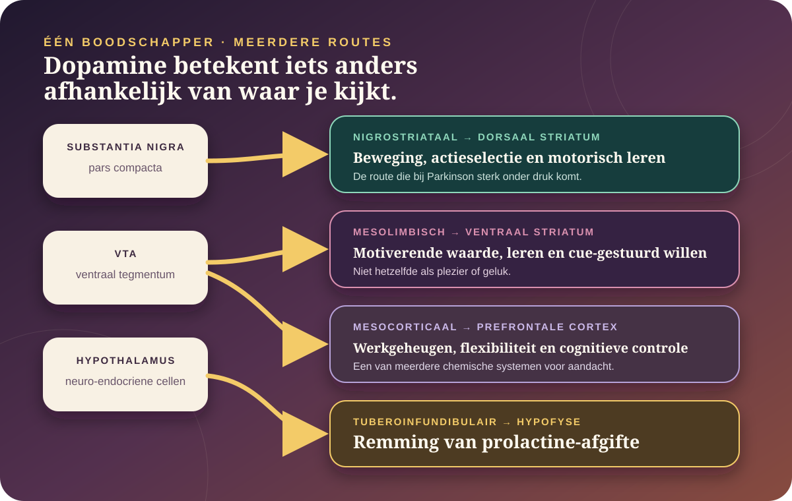

De kern in gewone taal
Dopamine is geen gevoel. Het is een boodschapper waarvan de betekenis afhangt van route, timing en receptor.
Dopamine helpt hersencircuits hun gevoeligheid, leerregels en actiebereidheid veranderen. Een kort signaal na een onverwachte uitkomst kan iets anders doen dan een langzamer veranderende dopaminetoon. En dopamine in het striatum is niet hetzelfde verhaal als dopamine bij de hypofyse.
Dopamine doet mee aan beweging, leren, motivatie, aandacht en hormoonregulatie.
Een cue kan aantrekkingskracht krijgen zonder dat de uiteindelijke ervaring even plezierig is.
Een “lege dopaminetank” is geen zinvolle verklaring voor een luie dag of veel schermtijd.
Vier routes die je niet op één hoop mag gooien.

“Dopamine doet motivatie” is ongeveer zo precies als “elektriciteit doet internet”. Je moet weten waar het signaal vandaan komt, waar het aankomt, wanneer het verschijnt en welke cellen het ontvangen.
Dopamine verandert de kans dat een circuit leert of reageert.
Vrijgekomen dopamine bindt aan receptorfamilies die grofweg als D1-achtig en D2-achtig worden gegroepeerd. De dopamine-transporter haalt een deel weer uit de ruimte tussen cellen. Enzymen breken het molecuul verder af. Maar receptor, celtype en netwerktoestand bepalen samen het effect.
Fasisch
Korte veranderingen
Snelle stijgingen of dalingen kunnen gebeurtenissen, verwachtingen en acties markeren en leerprocessen beïnvloeden.
Traag veranderend
Toestand en bereidheid
Langzamere veranderingen hangen onder meer samen met motivatie en de waarde van inspanning, maar vormen geen universele energiemeter.
Receptorafhankelijk
Hetzelfde signaal, andere ontvanger
D1 en D2 zijn families, geen letterlijke gas- en rempedalen. Hun effect hangt af van de cel en het circuit.
Dopamine reageert vaak sterker op het onverwachte dan op het lekkere zelf.
In klassiek primatenonderzoek gingen bepaalde dopamine-neuronen reageren op een signaal dat een beloning voorspelde. Kwam de verwachte beloning niet, dan daalde hun activiteit rond het verwachte moment. Dat patroon lijkt op een beloningsvoorspellingsfout: het verschil tussen verwacht en ontvangen.
Beter dan verwacht
Een positieve fout kan de voorspellende cue of actie extra leerwaarde geven.
Zoals verwacht
Wanneer de uitkomst volledig voorspeld is, hoeft er weinig te worden bijgewerkt.
Minder dan verwacht
Een daling kan aangeven dat de voorspelling moet worden aangepast.
Een cue kan het “willen” opstuwen zonder het “lekker vinden” even sterk te maken.
In dieronderzoek kan dopaminerge stimulatie in de nucleus accumbens de aantrekkingskracht van een beloningssignaal versterken. Dat ondersteunt het onderscheid tussen wanting — ergens naartoe getrokken worden — en liking — de plezierreactie tijdens de ervaring.
Je kunt dus merken: “ik wil kijken, kopen, eten of doorgaan” terwijl de ervaring zelf al lang niet meer zo goed voelt als de verwachting.
Dat is geen bewijs dat ieder verlangen “dopamine” is. Honger, stress, herinnering, sociale betekenis, ontwerp en beschikbaarheid veranderen dezelfde situatie mee.
Bekijk het causale rattenonderzoek naar cue-gestuurd willen →
Zonder dopamine wordt niet alleen beloning anders — bewegen zelf wordt moeilijker schaalbaar.
De nigrostriatale route van substantia nigra naar dorsaal striatum helpt basale-ganglialussen acties selecteren, starten en kracht geven. Bij Parkinson gaan veel dopaminerge neuronen in deze route verloren. Dat kan traagheid, stijfheid en andere motorische problemen veroorzaken, naast veel niet-motorische klachten.
Aandacht ontstaat niet uit één dopamineniveau.
Prefrontale circuits gebruiken dopamine samen met noradrenaline, glutamaat en vele andere signalen. Geneesmiddelen voor ADHD kunnen catecholaminesignalering beïnvloeden, maar een reactie op medicatie bewijst geen vooraf bestaand “dopaminetekort”. Dosis, timing, bijwerkingen en diagnose horen bij medische begeleiding.
Een dopaminedetox ontgift geen dopamine.
Mythe
“Mijn dopamine is op.”
De hersenen maken, recyclen en reguleren voortdurend dopamine. Vermoeidheid of verveling is geen thuistest van een neurotransmittervoorraad.
Mythe
“Veel plezier maakt receptoren kapot.”
Receptoren kunnen zich aanpassen, maar populaire drempelverhalen zijn geen diagnose en verschillen sterk van wat bij chronisch middelengebruik wordt onderzocht.
Wel bruikbaar
Prikkels tijdelijk herschikken
Meldingen uitzetten of afstand maken kan gedrag veranderen doordat cues en toegang veranderen — niet doordat je dopamine uit je lichaam spoelt.
Klinische grens
Verslaving is geen hoge dopaminescore.
Verslaving omvat leren, verlangen, verlies van controle, stresssystemen, sociale context en lichamelijke aanpassing. Dopamine is belangrijk, maar niet het hele ziektebeeld.
Volg de volledige lus van cue naar craving, lichaam, context en zorg →
fMRI meet geen dopamine.
fMRI volgt veranderingen in bloedoxygenatie. PET en SPECT gebruiken radioactieve tracers om bijvoorbeeld receptoren, transporters of veranderingen in binding te benaderen. In dieronderzoek kunnen sensoren, voltammetrie en microdialyse veel directer en sneller meten. Iedere methode ziet een andere schaal.
Dus: een kleurrijk fMRI-gebied is geen “dopaminepiek”. En een gemiddelde groepsverandering is geen persoonlijke chemische uitslag.
De nieuwste studies maken dopamine minder simpel, niet meer hackbaar.
Beide bevindingen komen uit muisonderzoek. Ze zijn geen persoonlijk leefstijlrecept.
“Wat deed ik anders dan verwacht?”
Dopamine in de staart van het striatum droeg in een muistaak een waardevrij leersignaal dat herhaalde geluid-actieassociaties verstevigde.
Lees de Nature-studie →Minder proeven, meer leren per proef.
In muizen bleek leren per ervaring sterk toe te nemen wanneer beloningen verder uit elkaar lagen. Over dezelfde totale tijd bleef het leren vergelijkbaar.
Lees de Nature Neuroscience-studie →Beweging kan dopaminegegevens vervormen.
Nieuw werk onderzoekt of sommige dopaminepatronen tijdens leertaken beter door subtiele uitvoering dan door leren zelf worden verklaard.
Bekijk de methodologische tegenstem →Bewijsgrens: causale circuitstudies bij muizen kunnen een mechanisme tonen, maar bewijzen niet dat menselijke motivatie, liefde, scrollen of uitstelgedrag volgens exact dezelfde regel werkt.
Waarop dit dossier steunt.
- Primatenonderzoek · 1997Schultz, Dayan & Montague — A neural substrate of prediction and reward
De klassieke basis voor beloningsvoorspellingsfouten in dopaminerge neuronen.
- Causaal dieronderzoek · 2013Peciña & Berridge — Dopamine amplifies cue-triggered wanting
Onderscheid tussen aantrekkingskracht van een cue en de plezierreactie zelf.
- Pathwayspecifiek dieronderzoek · 2019Halbout e.a. — Mesolimbic dopamine mediates cue-motivated seeking
Causale scheiding tussen beloning zoeken en ophalen in ratten.
- Menselijk experiment · 2019Ferreri e.a. — Dopamine modulates musical reward
Dubbelblind farmacologisch onderzoek bij 27 deelnemers; interessant maar klein en taakgebonden.
- Dieronderzoek · 2025Greenstreet e.a. — Dopaminergic action prediction errors
Een voorgesteld waardevrij leersignaal voor herhaalde associaties.
- Dieronderzoek · 2026Burke e.a. — Duration between rewards controls learning rate
Nieuw temporeel principe voor gedragsmatig en dopaminerg leren bij muizen.
- Methodologische tegenstem · 2025Dopamine dynamics can be explained by performance rather than learning
Waarschuwing dat subtiele beweging sommige gemeten dopaminedynamiek kan verklaren.
- Basale-gangliacircuits · 2013Cui e.a. — Concurrent direct and indirect pathway activation
Waarom D1/gas en D2/rem als letterlijk schema tekortschieten.
Lees ook het Atlas-kompas en ons bronnenbeleid.